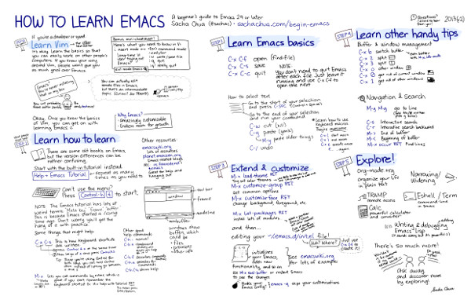

이맥스는 다양한 확장 기능을 지원하고 원하는대로 커스터마이징 가능한 텍스트 에디터입니다. 이맥스는 C 언어로 만들어진 프로그램으로, 이맥스 확장을 위한 독자적인 Lisp 구현(Elisp)을 포함하고 있습니다.
Tron Legacy에 이맥스가 등장한 데는 다 이유가 있습니다. 섹시하니까요!(물론 기능도 뛰어나고요).
이맥스는 단순한 텍스트 에디터 기능 뿐만 아니라 소셜 네트워크, 해킹, 코딩, TODO 리스트 관리, 일정 관리, 테트리스도 가능하며, 심지어는 심리치료와 카운셀링을 위해 M-x doctor 기능도 지원하고 있습니다.
GNU Emacs는 돈을 지불할 필요도 없으며 어떠한 제약도 없는 자유 소프트웨어입니다. 이맥스는 St. iGNUcius — 리처드 스톨만이 처음 만들었습니다.
이맥스는 사용자에게 4가지 본질적 자유를 선사합니다. 이 뿐만 아니라 이맥스는 변화와 확장에 적합하게 설계되어있습니다.
이맥스는 어느 부분이건 원하는대로 커스터마이징 가능하며 테마 기능 또한 지원합니다. 이맥스의 외관을 벗겨낼 수 있을 뿐 아니라 M-x load-theme 명령어로 다른 사람이 만든 테마를 사용할 수도 있습니다.
이맥스는 거의 모든 프로그래밍 언어를 지원합니다. 리스프, 루비, 파이썬, PHP, 자바, 얼랭, 자바스크립트, C, C++, 프롤로그, Tcl, AWK, 포스트스크립트, 클로저, 스칼라, 펄, 하스켈, Elixir 등등 열거한 언어는 물론 이 외에도 다양한 언어를 지원하고 있습니다.
각각의 언어에 대해서 문법 강조(Syntax highlighting), 자동 들여쓰기, 에디터 안에서 코드 실행하기, 디버깅, 코드 탐색, 버전 컨트롤 시스템을 사용할 수 있습니다.
Org mode는 여러 기록을 비롯해 TODO 리스트 정리, 프로젝트 관리, 문서 관리를 도와줍니다. 이 사이트와 같은 HTML로 이루어진 웹사이트도 만들 수 있고, 작성한 문서를 LaTeX, Beamer, OpenDocument 등 다양한 포맷으로 변환할 수 있습니다.
Tramp는 이맥스에서 네트워크 상의 파일을 편집할 수 있게 도와줍니다. SSH를 통해서 파일을 편집할 수 있게 해주며, 로컬 파일에 대해서도 su/sudo를 사용해 편집할 수 있게 합니다.
ERC는 빌트인 이맥스 IRC 클라이언트이며, BitlBee는 몇몇 메신저 서비스를 이맥스 안에서 사용할 수 있게해줍니다.
이맥스 안에서 메일 클라이언트, 웹 브라우저, 캘린더, 게임을 할 수 있고, 심지어 비디오나 이미지를 편집할 수도 있습니다. 이맥스 패키지 아카이브에는 2000개 이상의 패키지가 있습니다. M-x list-packages 명령어를 사용하면 GNU ELPA, MELPA, Marmelade에서 사용하고자하는 패키지를 검색하고 설치할 수 있습니다.
이맥스는 대부분의 운영체제를 지원하고 있습니다. 공식적으로 GNU, GNU/Linux, FreeBSD, NetBSD, OpenBSD, Mac OS X, MS Windows, Solaris를 지원합니다.
GNU 이맥스는 거의 모든 GNU/Linux 배포판에서 사용 가능합니다. 몇몇 시스템에서는 emacs 명령어를 실행하는 것만으로 바로 사용할 수 있습니다. emacs 명령어를 찾을 수 없다면 apt, yum, pacman과 같은 시스템 패키지 매니저를 사용해 설치할 수 있습니다. GNU 사이트에서 직접 이맥스를 다운로드 받는 방법도 있습니다.
윈도우 용 이맥스는 GNU 서버에서 내려받을 수 있습니다.
윈도우 이맥스에 대한 더 자세한 정보는 GNU 사이트를 참조해주세요.
이맥스는 Mac OS X에 기본적으로 포함되어있습니다. Terminal.app을 실행시키고 emacs 명령어를 실행시켜주세요. 하지만 이는 오래된 버전일 가능성이 높습니다. 최신 안정 버전인 이맥스 24 사용을 권장합니다.
Mac OS X에서는 다양한 방법으로 이맥스를 설치할 수 있습니다.
이맥스를 정복하는 일은 목표가 아니라 과정이다.
— 어느 행복한 이맥스 사용자
It's not called the self-documenting real-time display editor for nothing. 이맥스에는 이맥스 위에서 실행할 수 있는 훌륭한 튜토리얼이 내장되어 있습니다. 놀라셨나요?이건 시작에 불과합니다.
이맥스를 설치하고 실행해주세요. 이맥스가 여러분을 반겨줍니다. 페이지에서 마우스로 Emacs Tutorial 링크를 클릭합니다.
마우스 대신에 Alt + X 키를 눌러 이맥스 화면 아래 쪽의 명령어 버퍼에서 명령어를 입력할 수도 있습니다. help-with-tutorial라고 입력해주세요. 수많은 이맥스 명령어 중에 하나를 처음으로 실행했습니다. 어떻게 느껴지시나요?이런 방식의 명령어 실행은 자주 사용되므로 친숙해지시길 바랍니다.
이 인터렉티브 튜토리얼은 이맥스에서 커서를 어떻게 이동시키고 텍스트를 어떻게 편집하는지 알려줍니다. 튜토리얼은 빙산의 일각에 불과합니다. 이제부터가 정말 시작입니다.
Sacha Chua는 이맥스를 배우기 위한 비주얼 가이드를 CC 라이센스로 공개하고 있습니다. 이맥스 배우기 : 손으로 그린 입문자를 위한 한 페이지 가이드(How to Learn Emacs: A Hand-drawn One-pager for Beginner).  다른 비주얼 가이드도 공개되어있습니다.
이맥스는 전 세계의 해커들이 행복하게 사용하고 있습니다. 이들은 이맥스를 시작하려는 여러분에게 기꺼이 도움이 되어줄 것이며 자신들의 경험을 공유해줄 것입니다. 혼자서 씨름하지 마세요. 아래의 자료들이 도움을 줄 것입니다.
{kind=link}